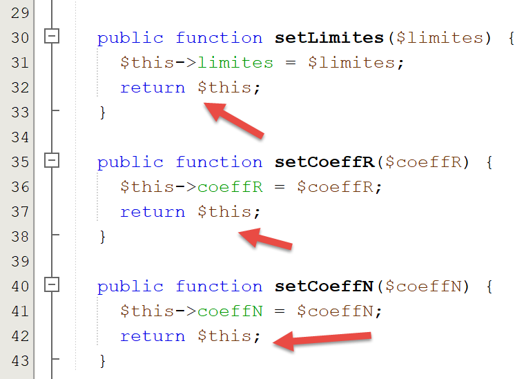

8. Application Exercise – Version 3
We’ll revisit the exercise we covered earlier (sections 4.3 and 4.4) to solve it using PHP code that employs a class.
8.1. The script directory structure

8.2. The [ExceptionImpots] exception
In version 03, when a constructor or class method encounters an error, it will throw the following [ExceptionImpots] exception:
Comments
- line 4: the [ExceptionImpots] class is in the [Application] namespace;
- line 6: the [ExceptionImpots] class extends the predefined PHP class [RuntimeException];
- line 8: the constructor expects two parameters:
In version 02, tax administration data was collected:
- first in a JSON file;
- then from this JSON file into an associative array;
In version 03, the tax administration data is still in the [taxadmindata.json] file but with different attribute names:
{
"limits": [
9964,
27519,
73779,
156244,
0
],
"coeffR": [
0,
0.14,
0.3,
0.41,
0.45
],
"coeffN": [
0,
1394.96,
5798,
13,913.69,
20,163.45
],
"half-share-income-limit": 1551,
"IncomeLimitSingleForReduction": 21037,
"coupleIncomeLimitForReduction": 42074,
"half-share-reduction-value": 3797,
"singleDiscountLimit": 1196,
"coupleDiscountLimit": 1970,
"coupleTaxCeilingForDiscount": 2627,
"singleTaxCeilingForDiscount": 1595,
"MaxTenPercentDeduction": 12502,
"minimumTenPercentDeduction": 437
}
In version 02, this file was used to initialize an associative array. In version 03, the file will initialize the following [TaxAdminData] class:
<?php
namespace Application;
class TaxAdminData {
// tax brackets
private $limits;
private $rate;
private $coeffN;
// tax calculation constants
private $half-share-income-limit;
private $singleIncomeLimitForReduction;
private $coupleIncomeLimitForReduction;
private $half-share-reduction-value;
private $singleDiscountCeiling;
private $coupleDiscountLimit;
private $coupleTaxCeilingForDiscount;
private $singleTaxCeilingForDiscount;
private $MaxTenPercentDeduction;
private $minimumTenPercentDeduction;
// initialization
public function setFromJsonFile(string $taxAdminDataFilename): TaxAdminData {
// retrieve the contents of the tax data file
$fileContents = \file_get_contents($taxAdminDataFilename);
$error = FALSE;
// error?
if (!$fileContents) {
// log the error
$error = TRUE;
$message = "The data file [$taxAdminDataFilename] does not exist";
}
if (!$error) {
// retrieve the JSON code from the configuration file into an associative array
$arrayTaxAdminData = \json_decode($fileContents, true);
// error?
if ($arrayTaxAdminData === FALSE) {
// log the error
$error = TRUE;
$message = "The JSON data file [$taxAdminDataFilename] could not be processed correctly";
}
}
// error?
if ($error) {
// throw an exception
throw new TaxException($message);
}
// Initialize the class attributes
foreach ($arrayTaxAdminData as $key => $value) {
$this->$key = $value;
}
// check that all keys have been initialized
$arrayOfAttributes = \get_object_vars($this);
foreach ($arrayOfAttributes as $key => $value) {
if (!isset($this->$key)) {
throw new ExceptionImpots("The [$key] attribute of [TaxAdminData] has not been initialized");
}
}
// check that we only have valid values
foreach ($this as $key => $value) {
// $value must be a real number >= 0 or an array of real numbers >= 0
$result = $this->check($value);
// error?
if ($result->error) {
// throw an exception
throw new ExceptionImpots("The value of the [$key] attribute is invalid");
} else {
// store the value
$this->$key = $result->value;
}
}
// return the object
return $this;
}
private function check($value): \stdClass {
…
return $result;
}
// toString
public function __toString() {
// JSON string of the object
return \json_encode(\get_object_vars($this), JSON_UNESCAPED_UNICODE);
}
// getters and setters
public function getLimits() {
return $this->limits;
}
public function getRate() {
return $this->coeffR;
}
…
}
public function setLimits($limits) {
$this->limits = $limits;
return $this;
}
public function setCoeffR($coeffR) {
$this->coeffR = $coeffR;
return $this;
}
…
}
Comments
- lines 6–20: the properties that will hold the properties of the same name from the JSON file [taxadmindata.json]. This is an important point: the properties of the [TaxAdminData] class are identical to those in the JSON file [taxadmindata.json]. This feature makes writing the code much easier;
- The [TaxAdminData] class has no constructor. In PHP, it is not possible to have multiple constructors. Defining one therefore prevents the object from being initialized in any other way. Moving forward, our classes will not have a constructor but will instead have several methods of the type [setFromSomething] that will allow them to be initialized in different ways. An object of type [TaxAdminData] is then constructed using the expression:
- line 23: the [setFromJsonFile] method initializes the class attributes with those of the same name in the [$jsonFilename] file;
- lines 24–42: The JSON file is parsed to construct the associative array [$arrayTaxAdminData]. We have already seen this code in the [main.php] script from version 02;
- lines 44–47: If an error occurs while processing the JSON file, an exception is thrown. This exception will propagate up to the main script [main.php];
- lines 48–51: The class attributes are initialized. Here, we take advantage of the fact that the associative array [$arrayTaxAdminData] and the class [TaxAdminData] have attributes with the same names as the values from the JSON file;
- lines 53–57: We verify that all attributes of the [TaxAdminData] class have been initialized;
- line 53: the expression [get_object_vars($this)] returns an associative array whose attributes are those of the object [$this], i.e., the attributes of the [TaxAdminData] class. Here, it is important to understand that the initialization process in lines 48–51 may have added attributes to the object [$this]. Thus, if we write:
then the attribute [x] is added to the object [$this] even if this attribute was not declared in the class [TaxAdminData]. What is certain is that the attributes in lines 6–20 are indeed part of the object [$this], but they may not have been initialized. This is an easy mistake to make; all it takes is a typo in an attribute name in the [taxadmindata.json] file;
- lines 54–57: we iterate through all the attributes of [$this], and if any of them have not been initialized, we throw an exception;
- an attribute may be initialized with an incorrect value. In PHP, it is not possible to specify a type for attributes. Thus, the operation:
is possible even though the [$plafondQfDemiPart] attribute should be a real number;
- lines 59–71: we verify that each of the class’s attributes has a positive real number or zero value. The [check] function on line 76 performs this task. Its parameter [$value] is either a single value or an array of values;
- line 62: the [check] function returns an object of type [\stdClass] with two attributes:
- [error]: TRUE if an error occurred, FALSE otherwise;
- [value]: the real numerical value corresponding to the [$value] parameter passed in line 62;
- line 64: we check whether the verification succeeded or not;
- line 66: if an attribute is not a positive real number or zero, an exception is thrown;
- line 69: otherwise, we record its numerical value;
- line 73: return the object [$this] as the result;
The [check] function is as follows:
private function check($value): \stdClass {
// $value is either an array of elements or a single element
// create an array
if (!\is_array($value)) {
$array = [$value];
} else {
$array = $value;
}
// Convert the array of elements of unknown type to an array of real numbers
$newArray = [];
$result = new \stdClass();
// the elements of the array must be positive or zero decimal numbers
$pattern = '/^\s*([+]?)\s*(\d+\.\d*|\.\d+|\d+)\s*$/';
for ($i = 0; $i < count($array); $i++) {
if (preg_match($pattern, $array[$i])) {
// store the float in newArray
$newArray[] = (float) $array[$i];
} else {
// log the error
$result->error = TRUE;
// exit
return $result;
}
}
// return the result
$result->error = FALSE;
if (!\is_array($value)) {
// a single value
$result->value = $newArray[0];
} else {
// a list of values
$result->value = $newArray;
}
return $result;
}
Comments
- Line 1: The parameter [$value] is either an array or a single element. Furthermore, its type is unknown. The value comes from the file [taxadmindata.json]. Depending on the values entered in this file, the values read can be integers, real numbers, strings, or booleans. For example:
"plafondQfDemiPart": 1551,
"plafondQfDemiPart": 1551.78,
"plafondQfDemiPart": "1551",
"plafondQfDemiPart": "xx",
In case 1, the value is of type [integer], in case 2 of type [floating-point], in case 3 of type [string] that can be converted to a number, and in case 4 of type [string] that cannot be converted to a number;
- lines 4–8: we create an array from the [$value] parameter received in line 1;
- line 10: the array that we will fill with real numbers;
- line 11: the result will be an object of type [\stdClass];
- line 13: relational expression for a positive or zero real number;
- lines 14–24: we verify that all elements of the array [$tableau] are positive or zero real numbers and fill the array [$newTableau] with these elements converted to type [float] (line 17);
- lines 18–23: as soon as an element is detected that is not a positive or zero real number, the error is noted in the result and the result is returned;
- lines 25–34: case where all elements of the array [$tableau] have been declared valid;
- Line 32: The returned value [$result→value] is an array of floats or a single float;
The [__toString] function in lines 82–85 returns the JSON string of the attributes and values of the object [$this].
Lines 87–110: the class’s getters and setters;
Note: It can sometimes be a bit tedious to have to write all the get/set methods for a class, especially when there are many properties. NetBeans can automatically generate these as well as the constructor. To do this, simply select the properties [1]:

- in [2], right-click where you want to insert code, then select the [Insert Code] option;

- in [4], indicate that you want to generate the constructor;
- in [5], check all the attributes: this means you want the constructor to have a parameter for each attribute;
- in [6], select the Java constructor style;
- in [7], specify that you explicitly want the [public] keyword before the constructor;
- In [8], click OK;

- In [9], NetBeans has generated the constructor. However, it was unable to specify the parameter types because it does not know them. Add them yourself [10];
To generate the getters and setters, repeat steps 2–4, and in step 4, select [Getter and Setter]:

- in [5], specify that you want getters and setters for each of the attributes;
- In [6], specify that you want the getters and setters in the style used by Java: setAttribute, getAttribute;
- In [7], specify that these getters and setters should be public;
- in [8], click OK;

- In [9], the getters and setters generated by NetBeans;
Delete these getters and setters and repeat steps 2–7.
- In [8], check the [Fluent Setter] option that we did not check previously;
The result is as follows:

Each setter ends with a [return $this] operation. This allows the attributes to be initialized as follows:
In fact, the value of [$data→setLimites($limites)] (line 32 of the code) is [$this], so here [$data]. We can therefore call the method [setCoeffR($coeffR)] of this object and so on, since in turn, this method also returns [$this] (line 37 of the code). This style of writing class methods, where methods that should return nothing instead return the object [$this], is called fluent writing. It makes these methods easier to use.
8.4. The [InterfaceImpots] interface
We now define the following [InterfaceImpots] interface [InterfaceImpots.php]:
<?php
// namespace
namespace Application;
interface TaxInterface {
// Retrieve the tax bracket data needed to calculate the tax
// may throw the ExceptionImpots exception
public function getTaxAdminData(): TaxAdminData;
// the interface can calculate tax
public function calculateTax(string $married, int $children, int $salary): array;
// the interface can process data from text files
// $usersFilename: user data file containing marital status, number of children, and annual salary
// $resultsFilename: file containing results in the form of marital status, number of children, annual salary, and tax amount
// $errorsFilename: file containing encountered errors
// may throw the ExceptionImpots exception
public function executeBatchImpots(string $usersFileName, string $resultsFileName, string $errorsFileName): void;
}
Comments
- line 4: the interface is placed in the [Application] namespace;
- line 6: the interface for calculating taxes;
- line 10: the [getTaxAdminData] method will retrieve data from the tax administration into an object of type [TaxAdminData], which we just introduced. Since this data may be in a file, a database, or even on the network, the [getTaxAdminData] method may fail to retrieve the data. In this case, it will throw an [ExceptionImpots] exception. This is the standard method in object-oriented programming for signaling an error encountered in a method or constructor;
- line 13: the [calculateTax] method will calculate a user’s tax;
- line 20: the [executeBatchImpots] method will calculate the tax for multiple taxpayers:
- [$usersFileName] is the name of the text file containing the taxpayers’ data;
- [$resultsFileName] is the name of the text file containing the tax amounts for these taxpayers;
- [$errorsFileName] is the name of the text file containing the errors encountered while processing these files;
The contents of the text file [$usersFileName] might look like this:
yes,2,55555
yes,2,50000
yes,3,50000
no,2,100000
no,3x,100000
yes,3,100000
yes,5,100000x
no,0,100000
yes,2,30000
no,0,200000
yes,3,200000
Note that lines 5 and 7 contain incorrect entries.
The contents of the text file [$resultsFileName] will then be as follows:
and the one in the text file [$errorsFileName] is as follows:
8.5. The [Utilities] class
We also define a [Utilities] class in a file named [Utilities.php]:
<?php
// namespace
namespace Application;
// a class of utility functions
abstract class Utilities {
public static function cutNewLinechar(string $line): string {
// remove the newline character from $line if it exists
$length = strlen($line); // line length
while (substr($line, $length - 1, 1) == "\n" or substr($line, $length - 1, 1) == "\r") {
$line = substr($line, 0, $length - 1);
$length--;
}
// end - return the line
return($line);
}
}
Comments
- line 4: the [Utilities] class is also placed in the [Examples] namespace;
- line 9: the [cutNewLineChar] method removes any line-ending character from the text passed to it as a parameter. It returns the new line thus formed. Note that this is a static method, meaning it will be called in the form [Utilities::cutNewLineChar]; ## 8.6. The abstract class [AbstractBaseImpots]
The interface [InterfaceImpots] will be implemented by the following abstract class [AbstractBaseImpots] [AbstractBaseImpots.php]:
<?php
// namespace
namespace Application;
// definition of an abstract class AbstractBaseImpots
abstract class AbstractBaseImpots implements InterfaceImpots {
// tax administration data
private $taxAdminData = NULL;
// data required to calculate the tax
abstract function getTaxAdminData(): TaxAdminData;
// tax calculation
// --------------------------------------------------------------------------
public function calculateTax(string $married, int $children, int $salary): array {
// $married: yes, no
// $children: number of children
// $salary: annual salary
// $this->taxAdminData: tax administration data
//
// Check that we have the tax administration data
if ($this->taxAdminData === NULL) {
$this->taxAdminData = $this->getTaxAdminData();
}
// Calculate tax with children
$result1 = $this->calculateTax2($married, $children, $salary);
$tax1 = $result1["tax"];
// Calculate tax without children
if ($children != 0) {
$result2 = $this->calculateTax2($married, 0, $salary);
$tax2 = $result2["tax"];
// apply the family quotient cap
$halfPartCap = $this->taxAdminData->getQfHalfPartCap();
if ($children < 3) {
// $PLAFOND_QF_DEMI_PART euros for the first 2 children
$tax2 = $tax2 - $children * $half-share-cap;
} else {
// $PLAFOND_QF_DEMI_PART euros for the first 2 children, double that for subsequent children
$tax2 = $tax2 - 2 * $half-share_limit - ($children - 2) * 2 * $half-share_limit;
}
} else {
$tax2 = $tax1;
$result2 = $result1;
}
// take the higher tax
if ($tax1 > $tax2) {
$tax = $tax1;
$rate = $result1["rate"];
$surcharge = $result1["surcharge"];
} else {
$surcharge = $tax2 - $tax1 + $result2["surcharge"];
$tax = $tax2;
$rate = $result2["rate"];
}
// calculate any tax credit
$discount = $this->getDiscount($spouse, $salary, $tax);
$tax -= $discount;
// calculate any tax credit
$reduction = $this->getReduction($spouse, $salary, $children, $tax);
$tax -= $reduction;
// result
return ["tax" => floor($tax), "surcharge" => $surcharge, "discount" => $discount, "reduction" => $reduction, "rate" => $rate];
}
// --------------------------------------------------------------------------
private function calculateTax2(string $married, int $children, float $salary): array {
…
// result
return ["tax" => $tax, "surcharge" => $surcharge, "rate" => $coeffR[$i]];
}
// taxableIncome = annualSalary - deduction
// the deduction has a minimum and a maximum
private function getTaxableIncome(float $salary): float {
…
// result
return floor($taxableIncome);
}
// calculates any tax deduction
private function getDiscount(string $married, float $salary, float $taxes): float {
…
// result
return ceil($discount);
}
// calculates a possible reduction
private function getDiscount(string $married, float $salary, int $children, float $taxes): float {
…
// result
return ceil($discount);
}
public function executeBatchTaxes(string $usersFileName, string $resultsFileName, string $errorsFileName): void {
…
}
}
Comments
- line 4: the [AbstractBaseImpots] class will be in the [Application] namespace, like the other elements of the application currently being written;
- line 7: the [AbstractBaseImpots] class implements the [InterfaceImpots] interface;
- line 9: the tax administration data will be placed in the [$taxAdminData] attribute;
- line 12: implementation of the [getTaxAdminData] method of the interface. We do not yet know how to define this method: we saw an example where the tax administration data was taken from a JSON file in the previous section. We will see another case where the data will be retrieved from a database. It will be up to the derived classes to define the content of the [getTaxAdminData] method. The two previous cases will give rise to two derived classes. The [getTaxAdminData] method is therefore declared abstract, which automatically makes the class itself abstract (line 7);
- lines 15–64: the tax calculation function already encountered in sections link and link;
- Version 02 stored tax administration data in an associative array [$taxAdminData]. Version 03 stores it in the attribute [$this→taxAdminData]. The first difference between these two approaches is the visibility of the tax data:
- in version 02, the associative array [$taxAdminData] did not have global visibility. It was therefore passed as a parameter to all tax calculation functions;
- in version 03, the attribute [$this→taxAdminData] has global visibility for all methods of the class. It is therefore not passed as a parameter to all tax calculation functions;
- A second difference stems from the fact that version 03 replaces functions with class methods. Each method call is now made using the expression [$this→getMethod(…)] (lines 27, 31, 57, 60);
- a third difference is that when the [calculateTax] method begins its work, it does not know whether the [private $taxAdminData] attribute it needs has been initialized. This is because the class constructor does not initialize it. It is therefore up to the [calculateTax] method to do so using the [getTaxAdminData] method on line 12. This is what is done on lines 23–25;
- apart from these differences, the tax calculation methods remain the same as in previous versions;
The [executeBatchImpots] function is as follows:
public function executeBatchImpots(string $usersFileName, string $resultsFileName, string $errorsFileName): void {
// quite a few errors can occur when handling files
try {
// open error file
$errors = fopen($errorsFileName, "w");
if (!$errors) {
throw new ExceptionImpots("Unable to create the error file [$errorsFileName]", 10);
}
// Open results file
$results = fopen($resultsFileName, "w");
if (!$results) {
throw new ExceptionImpots("Unable to create the results file [$resultsFileName]", 11);
}
// read user data
// each line has the format marital status, number of children, annual salary
$data = fopen($usersFileName, "r");
if (!$data) {
throw new ExceptionImpots("Unable to open taxpayer declarations [$usersFileName] for reading", 12);
}
// process the current line of the user data file
// which has the format: marital status, number of children, annual salary
$num = 1; // current line number
$nbErrors = 0; // number of errors encountered
while ($row = fgets($data, 100)) {
// debug
// print "Line " . ($i + 1) . ": " . $line;
// remove any end-of-line characters
$line = Utilities::cutNewLineChar($line);
// retrieve the 3 fields married:children:salary that make up $line
list($married, $children, $salary) = explode(",", $line);
// check them
// marital status must be yes or no
$married = trim(strtolower($married));
$error = ($married !== "yes" and $married !== "no");
if (!$error) {
// the number of children must be an integer
$children = trim($children);
if (!preg_match("/^\s*\d+\s*$/", $children)) {
$error = TRUE;
} else {
$children = (int) $children;
}
}
if (!$error) {
// the salary is an integer without the euro cents
$salary = trim($salary);
if (!preg_match("/^\s*\d+\s*$/", $salary)) {
$error = TRUE;
} else {
$salary = (int) $salary;
}
}
// error?
if ($error) {
fputs($errors, "line [$num] of file [$usersFileName] is incorrect\n");
$numberOfErrors++;
} else {
// calculate the tax
$result = $this->calculateTax($married, (int) $children, (int) $salary);
// write the result to the results file
$result = ["married" => $married, "children" => $children, "salary" => $salary] + $result;
fputs($results, \json_encode($result, JSON_UNESCAPED_UNICODE) . "\n");
}
// next line
$num++;
}
// any errors?
if ($errors > 0) {
throw new ExceptionImpots("Errors occurred", 15);
}
} catch (TaxException $ex) {
// rethrow the exception
throw $ex;
} finally {
// close all files
fclose($data);
fclose($results);
fclose($errors);
}
}
Code comments
- line 1: the function takes three parameters:
- [$usersFileName]: the name of the text file containing taxpayer data. Each line of text contains a taxpayer’s data in the following format: marital status (yes/no), number of children, annual salary:
- (continued)
- [$resultsFileName]: the name of the text file that will contain the results. Each line of text will have the following format:
- (continued)
- [$errorsFileName]: the name of the text file containing errors:
line [5] of the file [taxpayersdata.txt] is incorrect
line [7] of the file [taxpayersdata.txt] is incorrect
- line 3: because a number of operations can throw an exception, a try / catch / finally block surrounds the entire method code;
- lines 3–19: the three files are opened. An exception is thrown as soon as an open operation fails;
- line 24: the lines of the [$data] file are read one by one in chunks of up to 100 characters (the lines are all less than 100 characters long);
- line 28: the static method [Utilities::cutNewLineChar] is used to remove any end-of-line characters;
- line 30: the three elements of the read line are retrieved;
- lines 33–52: the validity of the three elements is checked. Here, an exception is not thrown if an error occurs, but the error message is written to the text file [$errors] (line 55);
- line 59: if the read line is valid, the tax is calculated. The result is obtained as an associative array ["tax" => floor($tax), "surcharge" => $surcharge, "discount" => $discount, "reduction" => $reduction, "rate" => $rate];
- line 61: the keys [married, children, salary] are added to the result;
- line 61: the result is written to the text file [$results] in the form of the JSON string of the result obtained;
- lines 68–70: at the end of processing the [$data] file, we check the number of erroneous lines encountered. If there is at least one, we throw an exception;
- lines 71–74: We catch the exception that the code may have thrown and immediately re-throw it (line 73). The purpose of this technique is to include a [finally] block on lines 74–79: regardless of how the method’s code execution ends, the three files that may have been opened by this code are closed. Closing a file that has not been opened does not cause an error; ## 8.7. The [ImpotsWithTaxAdminDataInJsonFile] class
The abstract class [AbstractBaseImpots] does not implement the [getTaxAdminData] method of the [InterfaceImpots] interface. We must therefore define it in a derived class. We do this in the following derived class [ImpotsWithTaxAdminDataInJsonFile]:
<?php
// namespace
namespace Application;
// definition of a class ImpotsWithDataInArrays
class TaxesWithTaxAdminDataInJsonFile extends AbstractBaseTaxes {
// an attribute of type Data
private $taxAdminData;
// the constructor
public function __construct(string $jsonFileName) {
// initialize $this->taxAdminData from the JSON file
$this->taxAdminData = (new TaxAdminData())->setFromJsonFile($jsonFileName);
}
// returns the data used to calculate the tax
public function getTaxAdminData(): TaxAdminData {
// return the [$this->taxAdminData] attribute
return $this->taxAdminData;
}
}
Comments
- line 7: the class [ImpotsWithTaxAdminDataInJsonFile] extends the abstract class [AbstractBaseImpots]. It will need to define the method [getTaxAdminData] that its parent class has not defined;
- line 9: the attribute [$taxAdminData] will contain the tax administration data;
- lines 12–15: the constructor receives as its only parameter the name of the JSON file containing the tax data;
- line 14: an object of type [TaxAdminData] is created and then initialized. This operation may throw an exception of type [ExceptionImpots]. This exception will propagate up to the main script [main.php];
- lines 18–20: we provide a body for the [getTaxAdminData] method, which the parent class had not defined. Here, we simply return the [$this->taxAdminData] attribute initialized by the constructor; ## 8.8. The [main.php] script
These classes and interfaces are used by the following [main.php] script:
<?php
// Strict adherence to the declared types of function parameters
declare(strict_types = 1);
// namespace
namespace Application;
// Include interface and classes
require_once __DIR__ . '/InterfaceImpots.php';
require_once __DIR__ . "/TaxAdminData.php";
require_once __DIR__ . '/TaxException.php';
require_once __DIR__ . '/Utilities.php';
require_once __DIR__ . '/AbstractBaseTaxes.php';
require_once __DIR__ . "/TaxWithTaxAdminDataInJsonFile.php";
// test -----------------------------------------------------
// Define constants
const TAXPAYERSDATA_FILENAME = "taxpayersdata.txt";
const RESULTS_FILENAME = "results.txt";
const ERRORS_FILENAME = "errors.txt";
const TAXADMINDATA_FILENAME = "taxadmindata.json";
try {
// Create an ImpotsWithTaxAdminDataInJsonFile object
$impots = new ImpotsWithTaxAdminDataInJsonFile(TAXADMINDATA_FILENAME);
// run the tax batch
$impots->executeBatchImpots(TAXPAYERSDATA_FILENAME, RESULTS_FILENAME, ERRORS_FILENAME);
} catch (TaxException $ex) {
// display the error
print $ex->getMessage() . "\n";
}
// end
print "Done\n";
exit();
Comments
- line 4: Strict adherence to function parameter types is enforced;
- line 7: the [main.php] script is also placed in the [Application] namespace;
- lines 10–15: We tell the PHP interpreter where the classes and interfaces used by the script are located. Note that here we did not use a `use` statement to declare the full names of the classes used by the script. This is unnecessary because the script and the classes are in the same namespace [Application];
- lines 18–22: the names of the text files used in the script;
- lines 24–29: an [ImpotsWithTaxAdminDataInJsonFile] object is created, and any exceptions are handled;
- line 28: the [executeBatchImpots] method is executed, which calculates taxes for all taxpayers in the [TAXPAYERSDATA_FILENAME] file. The results will be saved to the [RESULTS_FILENAME] file, and any errors to the [ERRORS_FILENAME] file;
- lines 29–32: in the event of a fatal error, the error message is displayed;
Results
With the following taxpayer file [taxpayersdata.txt]:
yes,2,55555
yes,2,50000
yes,3,50000
no,2,100000
no,3x,100000
yes,3,100000
yes,5,100000x
no,0,100000
yes,2,30000
no,0,200000
yes,3,200000
We obtain the following error file [errors.txt]:
Line [5] of the file [taxpayersdata.txt] is incorrect
Line [7] of the [taxpayersdata.txt] file is incorrect
and the following results file [resultats.txt]: